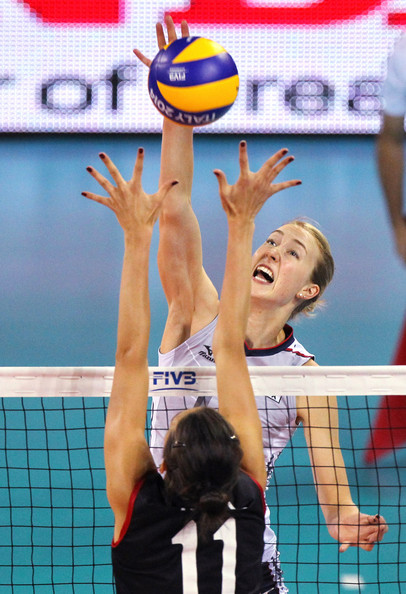

I loved volleyball in high school, and I like to keep up with the professional outside hitters.
This is Kim Hill. Kim Hill has a cannon for an arm. At 6 ft 4 in, the net is practically nonexistent for Kim Hill. It's, "the spike heard around the world," every time she spikes the ball. Kim Hill played college ball at Pepperdine University. She was the 2014 World Champion MVP, and the 2015-2016 Turkish Women's Volleyball League MVP. When she isn't playing on the US national team, she plays for a club called Vafibank in Turkey. Kim Hill frequently gets awarded, "second best outside hitter," and I like to pretend that I'm not bothered by that. Kim Hill is the best outside hitter. Don't ever question that.
Filippo Lanza is the outside hitter for both the Italian national team, and Trentino Volley. Trentino Volley won the FIVB World Championship in 2016. Filippo Lanza is also known for having the best eyebrows on the team, and somehow keeping his hair perfect even after a five set match.
Some days, the game is difficult, so difficult that Kim Hill gets mad. Never let Kim Hill get mad.
This Zhu Ting. She's 22, 6 ft 6 in, and she's the reason that Kim Hill gets awarded, "second best." As much as I don't like Zhu Ting, I have to respect her. She single handedly brought China the gold medal for volleybal at the 2016 Rio Olypics. She's referred to as a one woman team, and the Iron Hammer. A common phrase announcers use when she spikes the ball is, "right over the block," because she's so tall. She can seriously spike a ball clean over a block. She was recently signed to Vafibank for well over a million dollars. That's right, she's playing with Kim Hill now. Awkward...

This is Kim Hill about to end a life with another spike.
This is Earvin N'Gapeth putting one down on David Lee. Earvin N'Gapeth plays on the French national team, and for Modena Volley in Italy. He is widely regarded as one of the most creative volleyball players of all time. Half the time, he can't even wait for the setter. If the ball is in the air, he'll spike it. Sometimes he approaches the ball to spike it, but then sets it instead. He won the FIVB World League's Best Outside Hitter in 2015.
Somebody did something right. Look at that face. That's the face of a champ. You go Kim, you go.